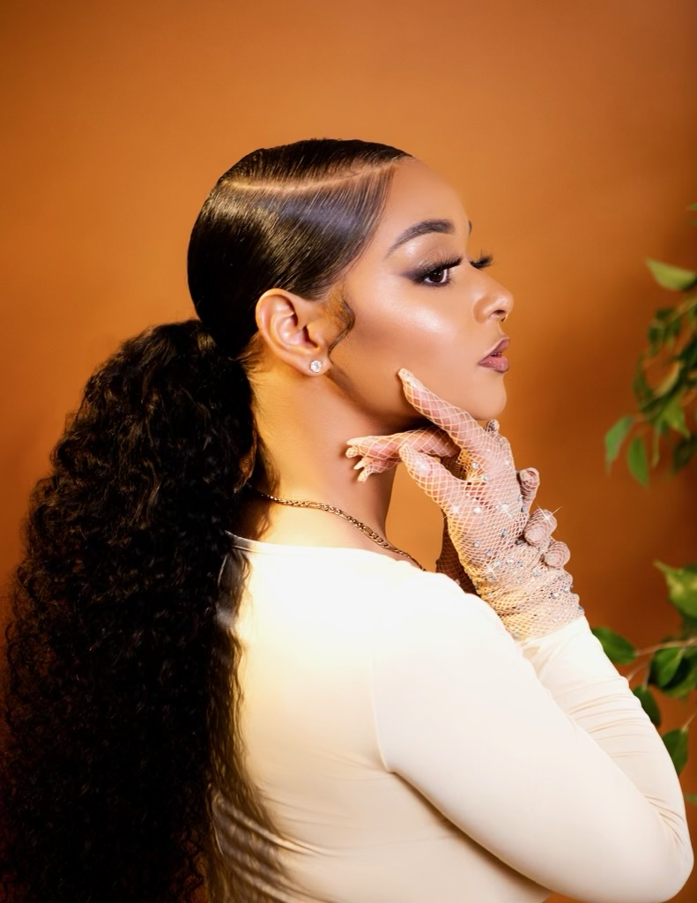

Ponytail Extensions
Ponytail extensions are a type of hair extension designed to add length, volume, or a different texture to a ponytail. These extensions are attached to your natural ponytail and provide an instant transformation, allowing for a variety of styles, from sleek and straight to voluminous and curly. They’re a quick, non-permanent option for enhancing or changing up your look.
Here are some key features of ponytail extensions:
-
Versatility: Here are some variations of ponytail extensions that I offer:
- Sew In: Hair extensions are attached to natural hair using thread and needle.
- Glue: Hair extensions are attached to natural hair with the use of glue around a protective wrapping strip
- Draw-String: Premade hair extensions are attached to natural hair with the use of drawstrings and/or clips. This allows the wearer to easily remove the extensions for comfort, or switch out extensions using the same ponytail base.
- Half-up-half-down: The hair is split into two sections. The bottom part of the hair is a traditional quick weave,or sew in while the top part of the hair is placed into one or two ponytails.
- Quick Installation: Ponytail extensions are very user-friendly and can be applied in just a few minutes.
- Protective Styling: Ponytail extensions can serve as a protective style, especially if your natural hair is tied back and kept from daily heat styling or manipulation. They allow you to experiment with new looks without altering your natural hair.
- Affordable Option: Ponytail extensions, particularly synthetic ones, are generally more affordable than other types of hair extensions, making them a cost-effective way to change your hairstyle without investing in more permanent methods.
- Natural Look: For a seamless look, it’s important to match the texture and color of the ponytail extension to your natural hair. This ensures that the extension blends smoothly and appears as part of your own hair.
In summary, ponytail extensions are a quick and easy way to enhance your hairstyle by adding length, volume, or texture to a ponytail. They’re versatile, temporary, and perfect for both casual and special occasions.